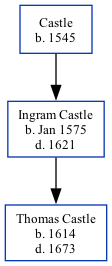

Ingram Castle 1575 - 1621
[ Home ] | [ Calendar ] | [ Surnames Index ] | [ Family History ]The son of Castle, Ingram Castle, the 10 times great-grandfather of Nigel Horne, was born in Jan 15751. He had 1 child, Thomas.
He died in 1621 in Kent, England.
Parents
- was born in 1545
Children
- Thomas was born in 1614
Citations
- Public Member Trees Online publication - Provo, UT, USA: The Generations Network, Inc., 2006.Original data - Family trees submitted by Ancestry members.Original data: Family trees submitted by Ancestry members.
Family Tree
Generated by Ged2Site. Last updated on Jul 20, 2025